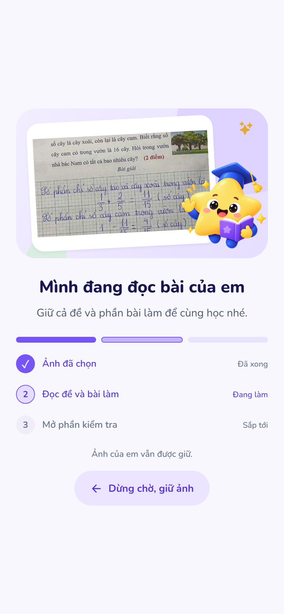
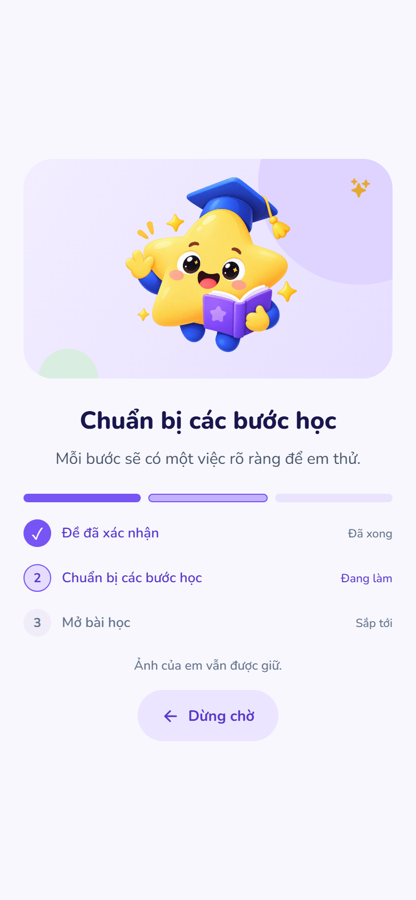
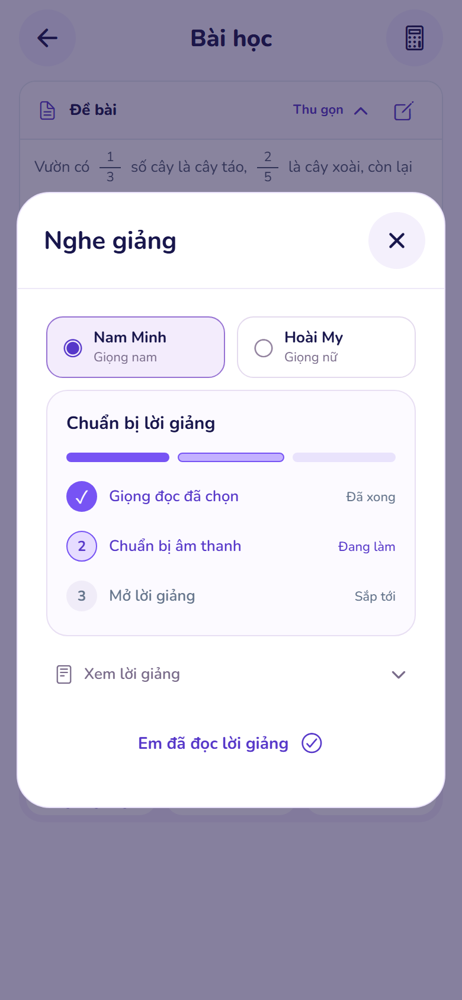
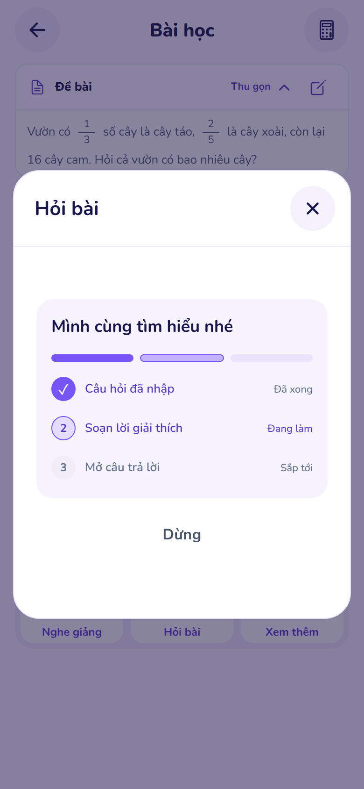
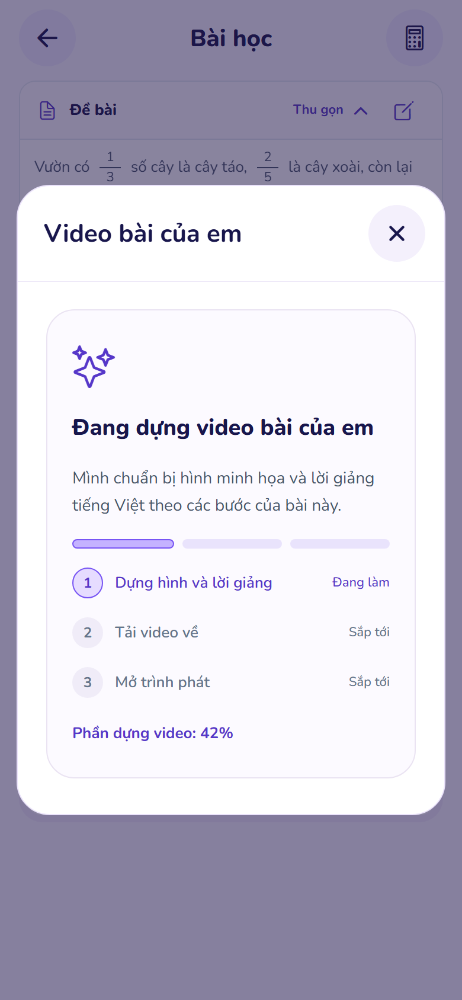
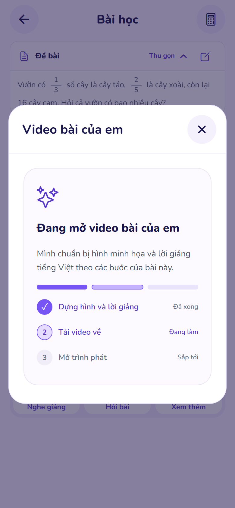

Chờ rõ ràng, học từng bước.
Giữ mascot và phong cách của nhánh Nam. Mỗi tác vụ cho biết phần đã xong, phần đang làm và phần sắp tới; chuyển bước theo kết quả thực tế.
Bấm vào ảnh để xem nguyên kích thước. Màn đọc ảnh được chụp ở 320 và 390 px; bước tải video riêng được chụp ở 390 px.
01 · Đọc ảnh bài toán
Giữ ảnh và nút dừng. Đi qua luồng chọn ảnh, kiểm tra riêng tư và cắt ảnh sẵn có.

02 · Chuẩn bị bài học
Đề đã xác nhận → chuẩn bị từng bước → mở bài học. Không tự tăng khi còn chờ.

03 · Chuẩn bị lời giảng
Chọn giọng → chuẩn bị âm thanh → mở lời giảng. Giữ đúng hai giọng nam và nữ.

04 · Soạn câu trả lời
Câu hỏi đã nhập → soạn lời giải thích → mở câu trả lời. Có thể dừng chờ.

05 · Dựng video có tiếng
Phần trăm bên dưới chỉ nói về bước dựng, lấy từ dữ liệu máy chủ trả về.

06 · Tải video về
Dựng xong vẫn phải tải dữ liệu và mở trình phát; chưa báo sẵn sàng quá sớm.
